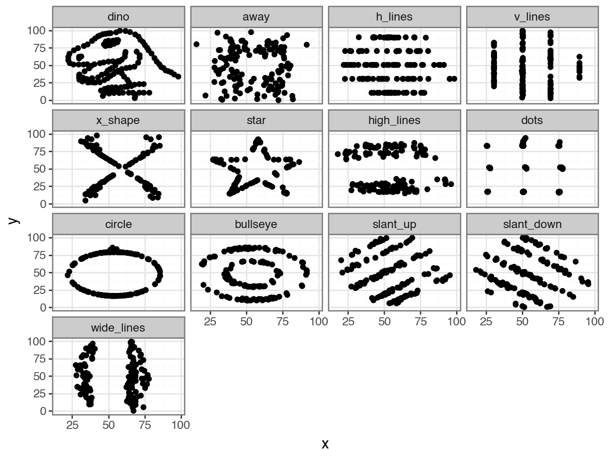

Class 4.1 - 数据可视化的概念¶
1. 数据可视化的重要性¶
数据可视化的概念大家都不陌生了，简单来说就是画图，用图表来展示数据中的规律和特征：
- 有一句古话说得好，"不识庐山真面目，只缘身在此山中"
- 在数据分析的过程中，如果只关注数据的一些描述性特征，例如均值、方差、相关系数等，可能会忽略数据中的一些重要信息，例如数据的分布、异常值、趋势等
- 通过数据可视化，我们可以更直观地了解数据的结构和特征，发现数据中的规律和趋势，从而更好地进行数据分析和建模
- 这就是从关注数据的特征到关注数据的结构的转变
我们来通过一个例子来看一下数据可视化的重要性：
- 首先，我们在数据文件夹里为同学们提供了一个数据集
datasaurus_dozen.csv - 这个数据集包含了 13 个不同的数据集，每个数据集都有相同的均值、方差、相关系数等描述性统计特征
- 我们先来加载一下这个数据集，并在其中随便查看两个数据集：
!pip install plotnine scikit-misc
import pandas as pd
dino_doz = pd.read_csv("../data/datasaurus_dozen.csv").reset_index(drop=True) # R 中等价于 datasauRus::datasaurus_dozen
# 将 dataset 列转换为有顺序的类别型，保持原始顺序
order = list(dino_doz["dataset"].unique())
dino_doz["dataset"] = pd.Categorical(dino_doz["dataset"], categories=order, ordered=True)
# 展示 dino 数据集的前几行
dino_doz[dino_doz["dataset"] == "dino"].head()
| dataset | x | y | |
|---|---|---|---|
| 0 | dino | 55.3846 | 97.1795 |
| 1 | dino | 51.5385 | 96.0256 |
| 2 | dino | 46.1538 | 94.4872 |
| 3 | dino | 42.8205 | 91.4103 |
| 4 | dino | 40.7692 | 88.3333 |
# 展示 x_shape 数据集的前几行
dino_doz[dino_doz["dataset"] == "x_shape"].head()
| dataset | x | y | |
|---|---|---|---|
| 568 | x_shape | 38.337757 | 92.472719 |
| 569 | x_shape | 35.751871 | 94.116768 |
| 570 | x_shape | 32.767218 | 88.518295 |
| 571 | x_shape | 33.729607 | 88.622266 |
| 572 | x_shape | 37.238249 | 83.724928 |
- 接着，我们来计算一下这 13 个数据集的描述性统计特征
summary = (
dino_doz
.groupby("dataset", observed=True)
.agg(
mean_x=("x", lambda x: round(x.mean(), 2)),
sd_x=("x", lambda x: round(x.std(), 2)),
mean_y=("y", lambda x: round(x.mean(), 2)),
sd_y=("y", lambda x: round(x.std(), 2)),
cor_xy=("x", lambda x: round(x.corr(dino_doz.loc[x.index, "y"]), 2))
)
.reset_index()
)
summary
| dataset | mean_x | sd_x | mean_y | sd_y | cor_xy | |
|---|---|---|---|---|---|---|
| 0 | dino | 54.26 | 16.77 | 47.83 | 26.94 | -0.06 |
| 1 | away | 54.27 | 16.77 | 47.83 | 26.94 | -0.06 |
| 2 | h_lines | 54.26 | 16.77 | 47.83 | 26.94 | -0.06 |
| 3 | v_lines | 54.27 | 16.77 | 47.84 | 26.94 | -0.07 |
| 4 | x_shape | 54.26 | 16.77 | 47.84 | 26.93 | -0.07 |
| 5 | star | 54.27 | 16.77 | 47.84 | 26.93 | -0.06 |
| 6 | high_lines | 54.27 | 16.77 | 47.84 | 26.94 | -0.07 |
| 7 | dots | 54.26 | 16.77 | 47.84 | 26.93 | -0.06 |
| 8 | circle | 54.27 | 16.76 | 47.84 | 26.93 | -0.07 |
| 9 | bullseye | 54.27 | 16.77 | 47.83 | 26.94 | -0.07 |
| 10 | slant_up | 54.27 | 16.77 | 47.83 | 26.94 | -0.07 |
| 11 | slant_down | 54.27 | 16.77 | 47.84 | 26.94 | -0.07 |
| 12 | wide_lines | 54.27 | 16.77 | 47.83 | 26.94 | -0.07 |
- 可以看到每个数据集中的
X和Y的均值、方差、相关系数等都是一样的 - 如果不进行进一步的探索，我们可能会总结为这 13 个数据集是一样的，或者说它们之间没有什么区别
- 但是如果我们对这 13 个数据集进行可视化，我们就会发现它们的结构和特征是完全不同的：
from plotnine import *
(
ggplot(dino_doz, aes(x="x", y="y")) +
geom_point() +
facet_wrap("dataset", ncol=4) + # R: facet_wrap(~ dataset, ncol = 4)
theme_bw()
)

- 通过这个例子我们可以看到，仅仅关注数据的描述性统计特征是远远不够的，我们还需要关注数据的结构和特征，这就是数据可视化的重要性所在
2. Python 中的数据可视化¶
在我们的课程中，我们会主要使用 plotnine 包来进行数据可视化：
plotnine是 Python 中对ggplot2的移植，它提供了与ggplot2几乎完全一致的语法来创建各种类型的图表，非常适合有 R 背景或者想要学习图层语法的同学- 与 R 中的
ggplot2一样，plotnine创建的图表是静态的，无法进行交互式的探索和分析 -
Python 还有很多其他的包也可以用来进行数据可视化，其中有一些还强调了交互性，例如：
matplotlib包：Python 最底层、最通用的可视化库，许多其他包都基于它构建seaborn包：基于matplotlib构建，提供了高层次的统计图形接口，语法简洁plotly包：提供了基于 JavaScript 的交互式图形系统，可以创建交互式的图表pyecharts包：基于百度的 ECharts 构建，提供了丰富的交互式图表和可视化组件
-
这些包大家可以根据自己的需求和喜好来选择使用，当然在我们的课程中我们会主要使用
plotnine包来进行数据可视化
3. Python 中的 plotnine 包与 R 中的 ggplot2 包的对比¶
事实上，大家可以发现，Python 中的 plotnine 包与 R 中的 ggplot2 包在语法上是高度相似的，但是我们要注意以下一些重要的区别：
- Python 中的整段作图代码要用括号
()包裹起来，否则 Python 无法识别跨多行的+连接 -
Python 以
pandas的DataFrame作为数据输入，而 R 以data.frame或tibble作为数据输入- 在 R 中强调
tibble的列名的时候不用加引号 - 而在 Python 中强调
DataFrame的列名的时候需要加引号
- 在 R 中强调
-
R 中的
ggplot2代码很多基于 R 的公式语法，而 R 的语法是要比 Python 灵活得多的- 这就导致了在 R 中很多函数的参数可以直接使用公式语法，而在 Python 中很多函数的参数只能使用字符串语法
- 比方说，R 中的
facet_wrap(~ dataset)可以直接使用波浪线表示公式语法，而在 Python 中则需要写成字符串，例如facet_wrap("dataset")（也可以写成facet_wrap("~dataset")）
-
R 中的
ggplot2包可以兼容许多的第三方开发者贡献的扩展包，而 Python 中的plotnine包目前还没有那么多的扩展包- 因此，Python 中的
plotnine包在功能上可能没有 R 中的ggplot2包那么强大和灵活 - 例如，R 中可以通过
ggokabeito包直接使用 Okabe-Ito 调色板，但是在 Python 中的plotnine包就需要手动定义色号
- 因此，Python 中的
总而言之就是：
- 虽然 Python 中的
plotnine包与 R 中的ggplot2包在语法上是高度相似的，但是在使用上还是有一些区别的 - 大家不能因为在之前课程中学过了 R 中的
ggplot2包，就认为在 Python 中的plotnine包就可以直接使用，还是需要注意一些细节和区别的